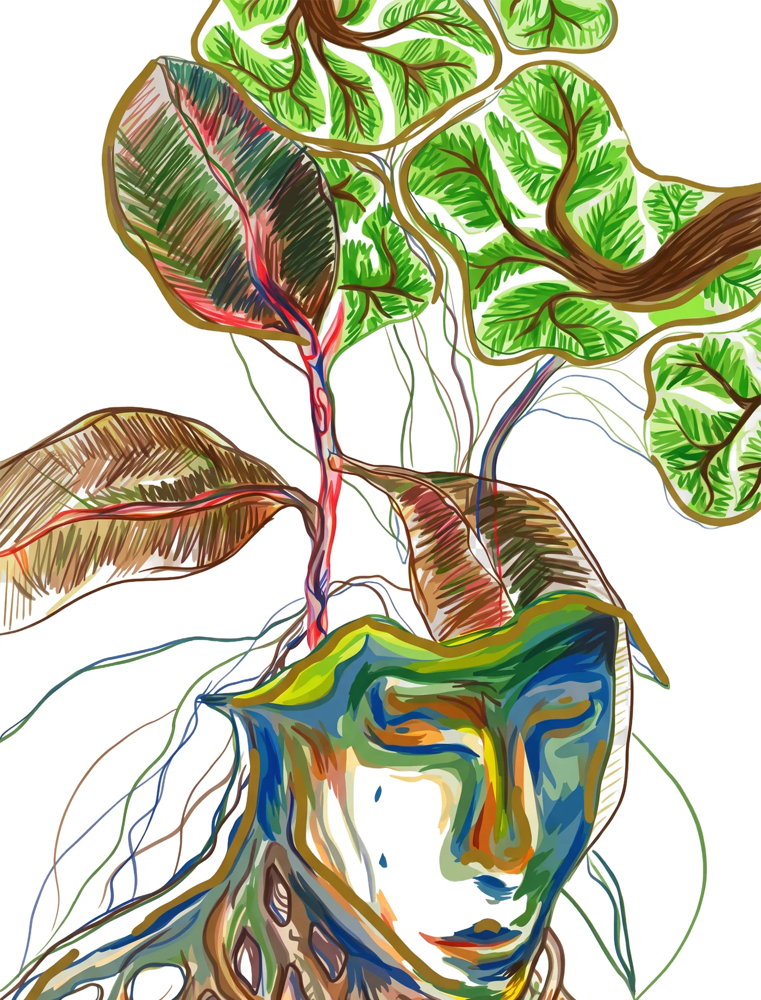

Feeling like a plantSamstag, 26. September 2026Einlass 17 UhrAmadeus, Mottenstraße 21, 26122 Oldenburg

Mottenstraße 21, 26122 Oldenburg
·
Felix WecknerStaustraße 1426122 Oldenburg
E-Mail: felix.weckner@gmail.com
Felix Weckner, Anschrift wie oben.
Felix Weckner, Staustraße 14, 26122 Oldenburg, felix.weckner@gmail.com
Diese Seite wird bei GitHub Pages gehostet, einem Dienst der GitHub, Inc., 88 Colin P. Kelly Jr. Street, San Francisco, CA 94107, USA. Beim Aufruf verarbeitet GitHub technisch notwendige Daten: die IP-Adresse, den Zeitpunkt des Aufrufs und die abgerufene Datei. Diese Daten liegen in Server-Protokollen und dienen allein dem sicheren Betrieb der Seite (Art. 6 Abs. 1 lit. f DSGVO). Die Verarbeitung findet auch in den USA statt. Speicherdauer und weitere Einzelheiten regelt GitHub in seiner Datenschutzerklärung: docs.github.com/site-policy.
Keine Cookies, kein Tracking, keine Analyse-Dienste, keine eingebetteten Inhalte von fremden Servern. Die Sprachwahl (Deutsch oder Englisch) wird ausschließlich lokal in Ihrem Browser gespeichert und nicht übertragen. Die Kalenderdatei wird vollständig in Ihrem Browser erzeugt; dabei werden keine Daten übermittelt.
Der Anfahrts-Link öffnet einen Kartendienst. Ab dort gelten die Datenschutzregeln des jeweiligen Anbieters.
Sie haben das Recht auf Auskunft, Berichtigung, Löschung, Einschränkung der Verarbeitung und Widerspruch sowie das Recht auf Beschwerde bei einer Aufsichtsbehörde, in Niedersachsen: Landesbeauftragte für den Datenschutz.